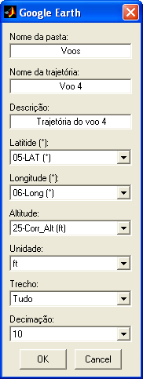
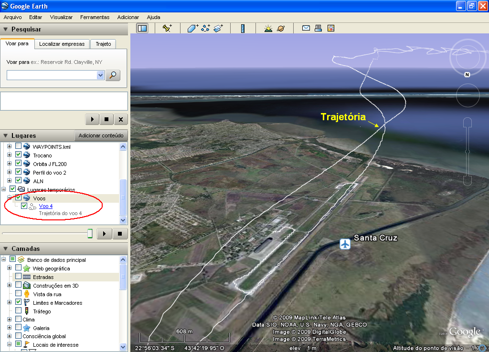

| Menu Ferramentas |
|
Essa ferramenta
permite ao
usuário
exportar uma trajetório composta por Latitude, Longitude e Altitude
para o formato .kml, que pode ser visualizado no programa
"Google
Earth".
Para acessar a
ferramenta, clique em “Ferramentas ► Ferramentas
externas ... ► Exportar para
Google Earth”.

● No campo
"Nome da pasta”, indique o nome da pasta onde a trajetória será
colocada na estrutura do Google Earth.
● No campo
“Nome da trajetória”, indique o nome para identificação da trajetória
no Google Earth.
● No campo "Descrição”, indique a descrição da trajetória a ser exportada.
● Nos campos
"Latitude” e "Longitude", indique os parâmetros das coordenadas, em
graus no sistema WGS-84.
●
No campo
“Altitude”, indique a altitude acima do nível do mar. O usuário pode
selecionar "Altitude do terreno" para que a trajetória seja apresentada
sobre o terreno no Google Earth.
● No campo
"Unidade", indique a unidade do parâmetro de altitude. As opções são m,
km, NM e ft.
● No campo
"Trecho", indique o trecho que deseja exportar: "Tudo" exportará toda a
extensão de dados e "Intervalo" ex
● No campo "Decimação", indique o quanto deseja que a cadência seja reduzida para exportação. As opções são 1, 2, 5, 10 e 20.
Clique no botão "OK" e indique um nome de arquivo para salvar a trajetória em formato .kml, ou "Cancel" para cancelar a exportação.
Após salvar o arquivo, a ferramenta questionará se o usuário deseja abrir o Google Earth para visualizar a trajetória salva.
A trajetória é apresentada da seguinte forma na tela do Google Earth:

| |
Conversor de unidades | Ferramentas externas |  |